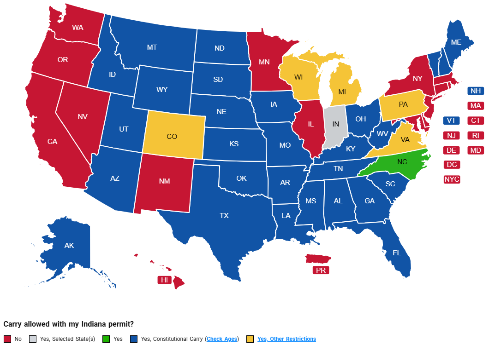

The following sections detail Second Amendment information specific to each US State. Sources are beneath each table and hyperlinks are throughout the page, as well as on the Sources page.
Indiana
Carry Requirements
As of July 1, 2022, anyone age 18 years or older may carry a handgun without a permit. Indiana Code 35-47-2-3 states:
(a) A person who is at least eighteen (18) years of age and is not otherwise prohibited from carrying or possessing a handgun
under state or federal law is not required to obtain or possess a license or permit from the state to carry a handgun in Indiana
(IC 35-47-2-3).
This does NOT include any prohibited persons. Certain crimes and other factors may make an individual ineligible to carry a firearm.
Refer to this message from Indiana State Police about prohibited persons:
https://www.in.gov/isp/files/Permitless-Carry-Website-Messaging.pdf
"Proper Person" is outlined in
IC 35-47-1-7.
The following locations are "off-limits" for carrying according to State Law, even with a permit/license (Handgunlaw.us):
- In or On School Property - IC 35-47-9-2.
- On a School Bus.
- IC 35-47-9-1 Allows the carry of firearms by persons permitted to possess and who are transporting a person to or from school or a school function.
- On a Commercial or Charter Aircract - IC 35-47-6-1.
- Controlled Access Areas of An Airport - IC 35-47-6-1.3 & 35-47-6-1.4.
- State Fair Grounds - 80 IAC 11-2-2.
- Shipping Port - 130 IAC 4-1-8.
The following locations are "off-limits" according to Federal Law, even with a permit/license (Handgunlaw.us):
- Federal Courthouses
- Federal Buildings
- Any Building Owed, Leased or Rented by the Federal Government
- Federal Prisons
- U.S. Army Corps of Engineers
- National Cemeteries
- Military Bases
- Rented Offices
- Amtrak
- Post Office
- Bureau of Land Management
- Indian Reservations
- Veterans Administration Properties
Reciprocity
The following map illustrates which US states honor/don't honor an Indiana Handgun License.
Red states do not honor, Green states do honor, Blue states honor & allow Constitutional Carry, Yellow states honor but with certain restrictions.
Source: United States Concealed Carry Association (USCCA)
Indiana honors permits from all 50 states and jurisdictions.
The following states honor Indiana permits with no restrictions (USCCA):
- Alabama
- Arkansas
- Idaho
- Montana
- New Hampshire
- North Carolina
- North Dakota
- South Dakota
- Vermont
The following states honor Indiana permits but with certain restrictions (USCCA):
- Alaska
- Arizona
- Colorado
- Florida
- Georgia
- Iowa
- Kansas
- Kentucky
- Louisiana
- Maine
- Michigan
- Mississippi
- Missouri
- Nebraska
- Ohio
- Oklahoma
- Pennsylvania
- South Carolina
- Tennessee
- Texas
- Utah
- Virginia
- West Virginia
- Wisconsin
- Wyoming
Handgun Carry Application
As of 2022, Indiana does not require a permit to carry a handgun. However, you can still apply for a permit through the Indiana State Police.
https://www.in.gov/isp/firearms-licensing/apply-for-a-new-license-to-carry/
50 States Map
The following map illustrates whether each US State requires a permit to carry.
Yellow states require a permit, Green states allow permitless carry.

Source: United States Concealed Carry Association (USCCA)
States with Constitutional/Permitless Carry
The following table lists each US State that allows Constitutional Carry, also called Permitless Carry.
The table lists the date the law went into effect and the minimum age the state requires to carry a firearm.
Constitutional Carry means that an indivigual who can legally possess and carry a handgun, in that state, may do so without the need to obtain a permit/license first.
| State | Effective Date | Min. Age |
|---|---|---|
| Alabama | 01/01/2023 | 19 |
| Alaska | 09/09/2003 | 21 |
| Arizona | 07/29/2010 | 21 |
| Arkansas | 08/16/2013 | 21 |
| Florida | 07/01/2023 | 21 |
| Georgia | 04/12/2022 | 21 |
| Indiana | 07/01/2022 | 18 |
| Idaho | 07/01/2016 | 18 |
| Iowa | 07/01/2021 | 21 |
| Kansas | 07/01/2015 | 21 |
| Kentucky | 06/27/2019 | 21 |
| Louisiana | 07/04/2024 | 18 |
| Maine | 10/12/2015 | 21 |
| Mississippi | 07/01/2015 | 18 |
| Missouri | 01/01/2017 | 18 |
| Montanna | 02/18/2021 | 18 |
| Nebraska | 09/02/2023 | 21 |
| New Hampshire | 02/22/2017 | 21 |
| North Dakota | 08/01/2023 | 18 |
| Ohio | 06/13/2022 | 21 |
| Oklahoma | 11/01/2019 | 21 |
| South Carolina | 03/07/2024 | 18 |
| South Dakota | 07/01/2019 | 18 |
| Tennessee | 07/01/2021 | 18 |
| Texas | 09/01/2021 | 21 |
| Utah | 05/05/2021 | 21 |
| Vermont | 03/04/1791 | 18 |
| West Virginia | 05/26/2016 | 21 |
| Wyoming | 07/01/2011(2021) | 21 |
Source: HandgunLaw.us